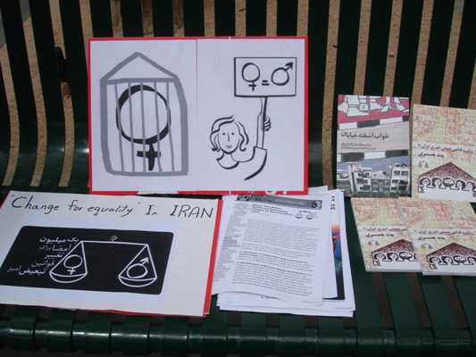
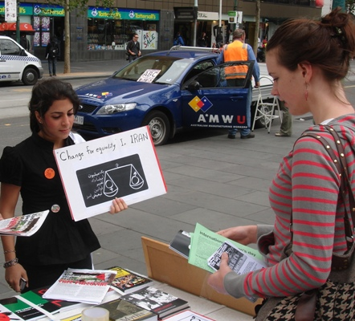
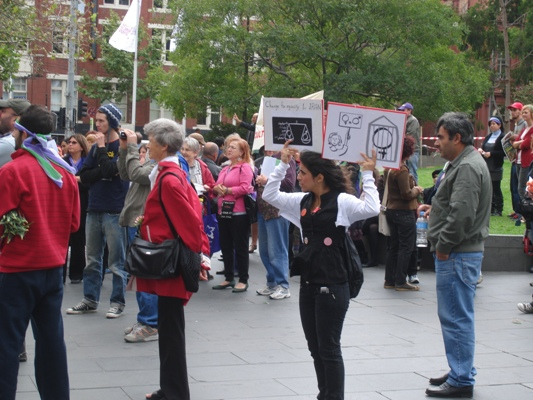

|
|
آغاز به کار کمپین یک میلیون امضا در استرالیا
سه شنبه20 اسفند 1387
تغییر برای برابری : فعالان کمپین یک میلیون امضا در استرالیا با شرکت در تظاهرات زنان ملبورن به مناسبت 8 مارس آغاز به کار کمپین یک میلیون امضا در این شهر را اعلام کردند. عسل اخوان، شکل گیری کمپین در مبلورن را روایت می کند:
برنامه 8 مارس در ملبورن استرالیا از ساعت 1 شروع می شد. از روزهای قبل پوسترها و آرم کمپین یک میلیون امضا را پرینت گرفته بودیم ، با کاغذهای مربوطه و توضیحات و برگه امضاها.از ساعاتی قبل به درست کردن پلاکارد مشغول بودیم . با کمک تنی چند از دوستان استرالیایی امید به پیش رفتن به سویی مثبت داشتیم. از کمی قبل برگه های امضا و توضیحات را بر روی میزی در منطقه ای که قرار بود برنامه 8 مارس اجرا شود گذاشتیم ، و با تنی چند از فعالین جنبش زنان در استرالیا به بین مردم رفتیم ، با پلاکارد کمپین و برگه امضاها.

برایشان توضیح می دادیم که ما برای چه اینجاییم ، کمپین چیست و خواسته زنان ایرانی چیست ، تغییر قوانین تبعیض آمیز ، برایشان از این قوانین ضد زن گفتیم و تعدادی ناباورانه نگاه می کردند و تأسف می خوردند و خودشان پیشنهاد می دادند که آیا ما هم می توانیم امضا کنیم؟ و می گفتم می توانید ساپورت کنید. امضا می کردند و آرزوی موفقیت .

برایشان از شرایط سخت فعالیت در ایران می گفتم ، و از سرسختی و هدف مشترک زنان برای رسیدن به قواینن برابر. عده ای دیگر شاید که بیشتر با وضعیت زنان در ایران آگاه بودند ، برای آنها هم گفتیم ، قوانین تبعیض آمیز را می شمردیم ، حق طلاق ،حق حضانت فرزند ، خروج از کشور ، دیه ، ارث و...گفتیم که در ایران زنان جنس دوم هستند ، گفتیم که قانون آنها را جنس دوم می خواند و ما تلاش می کنیم برای تغییر قوانین مردسالار، موازی با تلاش برای تغییر نگاه های مردسالار که عذاب دهنده است .

به سؤالهایشان در مورد مشارکت مردان در این کمپین جواب می دادیم ، و از پسران جوانی نام می بردیم که برابری خواهند ، که می جنگند با هم جنسهایشان برای تغییر قوانین ضد زن ، آنها عمق فاجعه را درک کرده اند و این نابرابری آنها را عذاب می دهد . تأکید کردم که ما به وجود ایم مردان برابری خواه افتخار می کنیم که از روزهای اول کمپین در تمام شادی ها و غم ها و نگرانی ها و موفقیت ها ، در کنار زنان و هم قدم با آنها پیش رفتند ، زندان رفتند ، تهدید شدند ، و امضا جمع کردند ، بین مردم رفتند ، عامه مردم را درک کردند و از هیچ تلاشی خسته نشدند. هیجان را می شد در نگاه مردم دید ، و در سرعت امضا کردناشان ، در سؤالهایشان ، در اینکه آدرس سایت تغییر برای برابری را می خواستند .
در این میان چند ایرانی بودند ، و همه آگاه از وجود کمپین ، برایشان می گفتیم از وضعیت زنان در ایران ، و از ایستادگیشان در این شرایط سخت ، از روحیه و امید و همبستگی زنان ایرانی و مردان برابری خواه. احساساتی می شدند ، و امضا می کردند. بحث با مردان ایرانی ، و توضیح شرایط و اینکه باید جنگید و باید اهمیت داد ،و همه اگر در اول بحث به خاطر دوری از ایران کمی به سؤال های دور از ذهن می پرداختند ، بعد از توضیح قبول می کردند و می گفتند باید تلاش کرد. مردی که ابتدا عقیده داشت که زنان در همچین وضعیتی نیستند که تو می گویی ،بغد از توضیحات من و آوردن دلیل و مثال ، پرسید آیا مردها هم می توانند امضا کنند وامضا کرد و آرزوی موفقیت
از روزنامه ها و سازمانهای استرالیایی آمدند و سؤال کردند و گزارش گرفتند و عکس گرفتند ، و برای همه وجود چنین کمپینی در ایران جالب و تحسین برانگیز بود.
.به آنها گفتیم که این آغاز کمپین در استرالیا است و این 8 مارس نقطه شروع
عده ای قول همکاری دادند و گفتند تلاش می کنند برای جمع آوری امضا و تغییر قوانین تبعیض آمیز.
با پلاکاردهای کمپین یک میلیون امضا ، به راهپیمایی روز جهانی زن درملبورن رفتیم ، و بعد از این شروع خوب کمپین در استرالیا ، تعدادی فعال جنبش زنان و برابری خواه کنارم بودند و اطمینان دادند که کمپین استرالیا هر روز می تواند قوی تر شود.